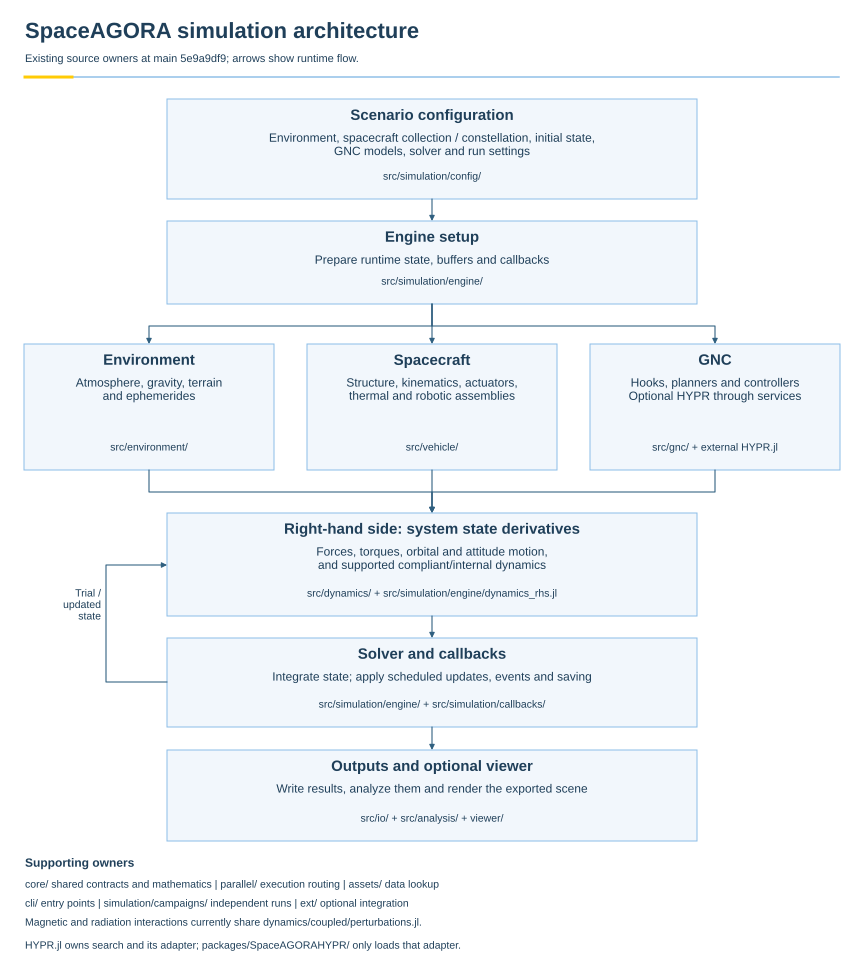

Architecture and Responsibilities
Use this page when you want to know how a simulation flows from a configuration to saved outputs, which folder and file owns each shared operation, and where your own code belongs.
This page is for students and new contributors who can already run an example and now need to find their way around the repository. It describes the code as it is at commit 5e9a9df9 of main (browse that tree at github.com/Space-FALCON-Lab/SpaceAGORA.jl/tree/5e9a9df9); every path below is relative to the repository root at that commit. This is a map of existing code, not an approved target layout. Suggested cleanup is labelled separately. One-run configuration now lives under src/simulation/config/, and HYPR is maintained in its own repository with an optional SpaceAGORA adapter. The compatibility package in this tree loads that adapter; it contains no search implementation.
Shortest successful command:
julia --project=. examples/AGORA_Basic_Quickstart.jlWhat to read next:
- Concepts (operating modes and entry surfaces)
- Simulation Configuration (every configuration field)
- The Integrated State (what the solver integrates)
- Simulation Outputs (the files a run writes)
- Extensibility (the stable hook contract for new models)
One picture of a run
A single run starts with a SimulationConfiguration handed to run_simulation. Setup prepares the state and models. During the solve, the engine repeatedly evaluates forces and torques, advances the state, and runs scheduled or event callbacks. Control forces enter the right-hand side; navigation, guidance and control-command updates use callbacks. Outputs are saved along the way and assembled into files at the end.

Download the vector architecture figure (PDF).
The arrows show runtime data flow, not Julia module-loading dependencies. At the module level, SimulationModel assembles the model types and hooks, SimulationEngine owns preparation and propagation, and SimulationCampaigns coordinates Monte Carlo and ensemble runs. src/SpaceAGORA.jl loads these modules and exposes the supported public interface. The folder map below identifies where their implementations live.
Spacecraft assembly and constellation composition
A spacecraft contains components; a scenario contains spacecraft. SpacecraftModel in src/vehicle/spacecraft/model.jl holds its links, joints, root body, mass properties, actuators and initial conditions. DynamicsModel in src/simulation/config/constellation_configuration.jl holds the spacecraft collection and selected dynamics effectors. It remains included inside SpacecraftModels, preserving the existing type and module identity. This physical collection can represent a single vehicle, a servicing pair or a constellation; it does not by itself allocate tasks or provide a communication network.
The compliant multibody capability belongs to this physical foundation. The current folder name retains its historical cloth terminology. src/dynamics/multibody_cloth/cloth_multibody.jl defines bodies with mass and inertia, compliant connections with translational and rotational stiffness and damping, and topology builders. The coupled robot-arm path in cloth_robot_arm_dynamics.jl supplies internal-state initialization and derivatives to the engine. This supports specified articulated and compliant models; it is not a claim that every arbitrary flexible surface or contact interaction is already coupled and validated. A mesh describes surface geometry, while a multibody model describes motion and loads.
For example, an arm attached to a station belongs to the station's assembly. A free-flying inspector is another spacecraft. Their task assignment and coordination belong at the mission level, above individual vehicle construction. The source-owner table below distinguishes vehicle construction from dynamics. Robot hardware, compliant equations, planning and control are currently spread across src/vehicle/robotics/, src/dynamics/multibody_cloth/, src/gnc/robotics/ and src/gnc/control/robot_arm_control.jl. HYPR robot-arm search is implemented in the separate HYPR.jl repository, under its ext/robot/ adapter files. SpaceAGORA retains configuration types, shared kinematics and dynamics, and compatibility entry points. The versioned HYPR service contract defines the services this adapter may use. Other robotics folder boundaries remain under review.
Use a joint simulation when spacecraft interact. The independent run_constellation_ensemble route in src/simulation/campaigns/constellation_ensemble.jl rejects nonempty GNC effectors by default because they might couple spacecraft. Its explicit opt-in is for independently acting effectors, not a way to add cross-vehicle communication. Independent ensemble runs and coordinated constellation simulation are different execution contracts.
Following one configuration through the code
Take the quickstart example. This is the path its configuration takes, with the file that performs each step.
- The example builds a configuration.
examples/AGORA_Basic_Quickstart.jlloadsexamples/common.jl, which activates the project and importsSpaceAGORA. The configuration is aSimulationConfigurationdefined insrc/simulation/config/simulation_configuration.jl, whose fields are listed on the configuration page. Studies that derive a variant from an existing configuration useSimulationModel.SimConfig._with_configuration, defined in the same file, so unchanged fields keep their references and model types are inferred again. run_simulationvalidates and prepares. The root wrapper insrc/SpaceAGORA.jlforwards the typed configuration tosrc/simulation/engine/execution.jl. Additional call wrappers, including the engine-configuration form, live insrc/simulation/engine/public_api.jl. It aligns the density-model epoch, then deep-copies the configuration unlessisolate_state=false, checks inertia, thermal and ephemerides support, builds initial conditions (dynamics_rhs.jl,build_initial_conditions), and allocates the shared buffers held inODEParams(src/core/types/runtime_types.jl).- Frames and geometry. Inertial-to-planet-fixed conversions and their time-dependent SPICE variants are in
src/core/interfaces/reference_system.jl(r_intor_p!,r_pintor_i); geodetic altitude and ellipsoid radius helpers are insrc/core/numerics/geodesy.jl; planet constants and ephemerides models are undersrc/environment/ephemerides/. - Atmosphere sampling. Every density model answers
getDensity(and the batchedgetDensityBatch!) insrc/environment/atmosphere/density_models.jl. The analytic models live there; the surrogate grid model and named presets are ingram_grid_atmosphere_model.jlandsurrogate_presets.jl; native GRAM integration and the fixed-grid adapter methods are provided by the package extension when both SpaceAGORA andGRAMSuiteare loaded, throughext/SpaceAGORAGRAMSuiteExt.jlandext/gram_grid_atmosphere.jl. The fixed-grid path needs the wrapper and a grid file, not native GRAM binaries. See Atmosphere Models for choosing one. - Forces and torques. The engine obtains the state and environment required by each effector and calls its
wrench(or the compatibilitycalcForceTorque). The wrapper module and its models are undersrc/dynamics/coupled/force_torque_models.jland theforce_torque_models/folder (gravity, aerodynamics, perturbations, thrusters, plume, reaction wheels). These modules also include implementations from other owners, such assrc/environment/gravity/gravity_models.jlandsrc/dynamics/coupled/aerodynamic_mesh_surrogate.jl. The hook contract is on the Extensibility page. - Guidance, navigation and control. The hooks are three modules:
src/gnc/guidance/guidance_hooks.jl,src/gnc/navigation/navigation_hooks.jlandsrc/gnc/control/control_hooks.jl. Planner contracts live undersrc/gnc/interfaces/and their RPO lifecycle undersrc/gnc/guidance/rpo/. Shared geometry, timing and metrics live undersrc/gnc/shared/, and RRT kernels undersrc/gnc/rrt/. Concrete implementations also remain in the guidance and control subfolders. Configured HYPR execution is provided by the external HYPR package throughSpaceAGORA.HYPRServices; the localpackages/SpaceAGORAHYPR/compatibility package loads its adapter. The aerobraking strategy selector lives insrc/mission/operations/aerobraking_policy/. Navigation and guidance hooks run as periodic callbacks between integrator steps; control commands are refreshed on periodic or event-driven schedules, and the resulting control force and torque are evaluated inside the right-hand side throughcalcControlForceTorque. - Callbacks. Save fields, density updates, thermal and plume updates, GNC dispatch, state anchors and stop conditions are registered from
src/simulation/callbacks/callbacks.jl;default_save_fieldsis insave_fields.jl. See Stopping on a Condition. - Propagation.
spacecraft_dynamics!indynamics_rhs.jlassembles translational and rotational derivatives for every spacecraft;solver_policy.jlbuilds tolerances and chooses the integrator route fromSolverConfig(see Solver Configuration). Parallel routing of the effector work is decided insrc/parallel/(see Parallel Execution). - Outputs. After the solve,
persistence.jlturns the saved values into a table and writes the enabled CSV, Feather and manifest outputs throughsrc/io/outputs/io_outputs.jland the atomic-write helpers insrc/io/serialization/io_serialization.jl. Withvisualization=truethe scene sidecar and viewer page are produced bysrc/analysis/visualization/scene/and the browser code underviewer/. See Simulation Outputs.
Map of the repository
Core package implementation lives in src/ and ext/. The separate HYPR repository owns its optimizer and SpaceAGORA adapter. The small compatibility package under packages/SpaceAGORAHYPR/ loads and checks that adapter. The GRAMSuite extension activates when both SpaceAGORA and GRAMSuite are loaded; installation alone does not load it. For HYPR, the supported setup installs the pinned external package and compatibility package, then the user explicitly loads SpaceAGORAHYPR. The two integrations are independent. The other folders hold tooling, data, examples and documentation. "Owner" below is the file or module that defines the behaviour; other code should call it rather than copy it.
| Path | What it holds | Owner of the shared operation |
|---|---|---|
src/SpaceAGORA.jl | Includes the modules below in order and re-exports the public surface | the root package; the supported list is the generated Public API |
src/core/ | Abstract types, shared state and runtime types, reference frames, geodesy, quaternions | frames: core/interfaces/reference_system.jl; quaternions: core/numerics/quaternion_utils.jl; model composition: core/simulation_model.jl |
src/environment/ | Planets and ephemerides, atmosphere models and presets, gravity fields, terrain grids | density sampling: environment/atmosphere/density_models.jl; terrain queries: environment/terrain/terrain_models.jl |
src/vehicle/ | Spacecraft components and assembly, structure and mass properties, mesh readers, thrusters, thermal models, kinematics, robotics | vehicle boundary per the topology contract: spacecraft/ composes, structure/ computes mass, inertia and geometry, actuators/thruster/thruster_hooks.jl owns thruster hooks |
src/dynamics/ | Translational and rotational equations, the coupled force/torque wrapper and its models, compliant multibody dynamics (currently under multibody_cloth/) | effector evaluation: dynamics/coupled/force_torque_models.jl |
src/gnc/ | Guidance, navigation and control hooks, planner contracts and lifecycle, shared calculations, baseline algorithms and HYPR compatibility types | the three hook files named above; planner contracts: gnc/interfaces/; lifecycle: gnc/guidance/rpo/; shared calculations: gnc/shared/; RRT kernels: gnc/rrt/; aerobraking bridge helpers: gnc/internal/ |
src/mission/ | Aerobraking policy types and strategy selection | mission/operations/aerobraking_policy/ |
src/simulation/ | One-run configuration, the engine (execution settings, setup, RHS, solver policy, execution, checkpoints, persistence), callbacks, campaigns, runtime locks | configuration assembly and copying: simulation/config/; setup and solve: simulation/engine/; callbacks: simulation/callbacks/; Monte Carlo and ensembles: simulation/campaigns/; shared locks: simulation/runtime_services.jl |
src/parallel/ | Parallel profiles and routing, cost models, worker process pools, in-process policy | route selection and process pools; owned by the parallelization work |
src/io/ | Configuration file loading, serialization helpers, output tables | output recording: io/outputs/io_outputs.jl |
src/analysis/ | Telemetry verification studies and example helpers, visualization scene and RPO plots | example helper builders: analysis/verification/telemetry_verification/example_support.jl |
src/assets/, src/cli/ | Asset lookup for RPO stations and the Odyssey surrogate; the spaceagora command | CLI, Assets & Modes |
ext/ | The GRAMSuite extension: native GRAM density, SPICE-backed ephemerides, native-free fixed-grid adapter methods | activates when both packages are loaded; see GRAMSuite Setup |
packages/SpaceAGORAHYPR/ | Compatibility package and source pin for external HYPR | src/SpaceAGORAHYPR.jl checks and aliases the external adapter; HYPRSource.toml pins its revision. Core services are defined in src/gnc/hypr/services.jl. Install and load with the RPO planner guide. |
examples/ | Runnable scenarios; common.jl is the shared bootstrap | primary scenario entrypoints; development viewer demos also live in scripts/dev/viewer_demos/; see the Examples Catalog |
templates/ | Starting files for a force/torque model, a density model and a control hook | copy one of these to begin an extension |
test/ | Unit, integration, smoke and stress suites, CI gates under test/gates/, contract checks under test/contracts/, review artifacts under test/ai_reviews/ | the gates enforce the ownership rules on this page |
benchmarks/ | Performance studies and the paper pipeline (benchmarks/scripts/performance_paper_pipeline.jl) | measurement work owned by the parallelization effort; see Studies and Benchmarks |
scripts/ | Operational tools: plotting (scripts/plotting/), telemetry fetching, GRAM installation helpers, development launchers (scripts/dev/), HPC and remote helpers | operational, not package code |
experimental/ | Typed scaffolds not loaded by the package (resources, laser terminal, constellation, estimation) | no stability guarantee; see its README |
viewer/ | The browser viewer and its build scripts | rendering only; the scene data comes from src/analysis/visualization/scene/ |
data/ | Gravity and topography coefficients, references, asset manifests and the Odyssey surrogate manifest | see Assets & Modes |
docs/ | This site: user pages under docs/src/, maintainer contracts under docs/architecture/ and docs/quality/, the public API registry | Maintainer Overview |
Where your code belongs
Distinguish a shared interface or execution mechanism from a particular algorithm that uses it. Reuse and tests are necessary for core contributions, but do not by themselves require an algorithm to become a mandatory dependency. The current tree still includes concrete research algorithms; this page maps their present locations rather than treating those locations as permanent boundaries.
Propose a core contribution in src/ when it is a shared contract, execution mechanism, physical model or agreed baseline implementation with a clear owner folder above, it implements one of the stable hooks (wrench, getDensity, guidance, navigation or control hooks, callbacks), it has unit tests under test/unit/, and any new root export is registered in docs/public_api_symbols.jl. Start from templates/ and follow Extensibility. Do not copy an existing model into a new file to change two lines; add a method or a configuration field to the owner instead.
Put it in examples/ when it is a runnable scenario that shows a capability. Examples load examples/common.jl, build a configuration through the package API, and never include package internals by relative path. A new example is also the right place to demonstrate a new model before a tutorial page exists.
Put a specialized algorithm in its own package or research repository when it implements the supported interfaces but is not required for ordinary runs. Its integration should use the public API, with a small package extension only where conditional integration is needed. The algorithm source belongs in its own package, with its simulator-specific adapter kept distinct from standalone search. HYPR now follows that split: its src/ owns standalone search and swarm policy, while its ext/HYPRSpaceAGORAExt.jl, ext/rpo/ and ext/robot/ provide configured SpaceAGORA execution. These paths are in HYPR.jl at the pinned revision, which has its own tests, examples and documentation.
SpaceAGORA retains shared planner interfaces, the direct baseline, configuration and result types, geometry, metrics, RRT and retiming services, and compatibility entry points. SpaceAGORA.HYPRServices exposes the adapter contract without changing the original owners of those bindings. Only the explicitly listed services and extension points are supported; arbitrary internal-module access is not the integration API. The current supported pair is SpaceAGORA 0.2.0 with HYPR 0.1.0, service contract 1.0.0 and compatibility package 0.2.0. Install the pinned pair and explicitly load SpaceAGORAHYPR using the RPO planner guide. The optimizer can run independently; configured RPO and robot-arm execution still requires SpaceAGORA services. EDG remains in core, so this is not a claim that every specialized algorithm has been extracted.
Put a study in benchmarks/studies/ or a research repository when it is a study driver, a parameter sweep or a comparison against another tool. Keep its failure and retry policy explicit in the script. Results, plots and reports belong in the private results repository, not in this public tree.
For example, a reusable scheduling interface and the mechanism that executes its commands can belong in the package after their API is agreed. A student's particular scheduling objective, search algorithm and experiment belong in the study or research repository. The current src/mission/ folder contains specific aerobraking policy code; its name does not imply that a general scheduling API already exists.
Put it in experimental/ when you are shaping an API for a subsystem that does not run yet. It is not loaded by using SpaceAGORA and can contain explicit not-implemented failures.
Put it in scripts/ when it is an operational tool: fetching data, installing native assets, plotting saved outputs, launching a batch on a cluster. Existing viewer demonstration drivers live under scripts/dev/viewer_demos/ with their own README; extend that family there. The older canonical-owner audit predates those development demos, so its exclusive wording about example entrypoints is not a complete current inventory.
The CI gates check structural rules such as keeping runnable examples and plotting scripts out of src/ and avoiding relative includes of package internals from examples. These checks do not prove every ownership or data decision is correct. Keep restricted inputs and private research outputs out of the public repository; review their provenance separately.
Remaining cleanup
Status at commit 5e9a9df9. Each item states what is confirmed, what is deliberate, and who is expected to act; the last sub-list is a proposal, not a description of the current code.
Completed cleanup:
- #164 removed five example-local constant-density definitions and reused the shared model.
- #188 replaced the generated
scripts/tb_matrix_debug_defs_only.jlcopy with a compatibility loader throughscripts/scenario_matrix_debug_support.jl, which loadstest/gmat_scenario_matrix.jlin definitions-only mode, repaired the debug runners, and retired the one-timescripts/dev/test_reorg_b1.shmigration. - #194 consolidated results loading and vector-sample extraction in the aerobraking plot helpers. The broader responsibility split remains a separate review item below.
- #200 added a CI safeguard that keeps the retired test-migration script absent.
- #204 changed
scripts/dev/viewer_demos/cygnss_constellation.jlto use_with_configuration. It preserves the explicit DP8 solver, fresh tolerance settings, and mission and dynamics overrides.
Benchmark entry point:
benchmarks/studies/performance_static_vs_parallel.jlloads its maintained owner,benchmarks/scripts/performance_paper_pipeline.jl, relative to the launcher directory. The include route is tested without executing the pipeline; benchmark workloads and performance validation remain separate.- Saved static-versus-parallel runs require the core, per-orbit, entry-duration, report and stage-timing files from the selected raw file's run stamp. Missing legacy files or required stage measurements produce an explicit incomplete-input error; files from another run and estimated zero costs cannot fill those gaps. Hardware metadata remains optional, and split-gate artifacts retain their independently generated timestamps. A run with no selected entry cases still supplies empty entry CSVs and its measured entry-stage time.
- Aggregation preserves entry reference/measured roles, failed attempts, per-pass reference values and errors, and uses the existing success-only summary rules. It reports the mean recorded entry-stage time and mean recorded runtime total across passes. That total includes other enabled stages, such as the multirate gate; it does not measure child startup or complete campaign wall time.
Intentional similarities (keep):
- Test fixtures that define their own small custom models, so the tests exercise user-defined-model handling rather than the package model.
- The canonical frame and quaternion files each have one production include; later subsystems that use different helpers are not automatically wrong.
Further review and ownership decisions:
Robotics and compliant multibody code contain repeated quaternion helpers. Distinguish raw from normalized multiplication and check rotation conventions before deciding which definitions can share an owner. Their current duplication is not yet established as intentional or necessary.
scripts/plotting/plot_data.jlis retained legacy plotting code using older dictionary and nested-solution interfaces; current workflow support has not been established. Check replacement coverage for its costate/switching, closed-form, per-link, attitude, reaction-wheel and torque/inertia diagnostics with the legacy capability owner before any port or retirement. Similar modern plots or available saved fields alone do not establish equivalent coverage.The direct
Tablesdependency and the redundantoutput/calibration/ignore entry are cleanup candidates. A direct-dependency change needs manifest validation; transitive users ofTablesmust continue to resolve it.GRAM loading and benchmark adapters repeat across
examples/common.jl, telemetry tools and study scripts, andperformance_runtime_analysis/main.jldefines extension methods itself. A shared bootstrap needs agreement with the parallelization and surrogate owners first.examples/aerobraking_mission_plot_utils.jlmixes mission setup, event extraction, reference comparison and plotting with live consumers; splitting by responsibility is organization work, not a duplicate removal.
Proposals (not implemented):
- Move the responsibility table above into a CI-checked owner registry so the gates and this page cannot drift apart.
- Add a
templates/guidance_hook_template.jlbeside the existing control hook template, for students building a guidance model. - Repeat the definition scan when later changes justify it.